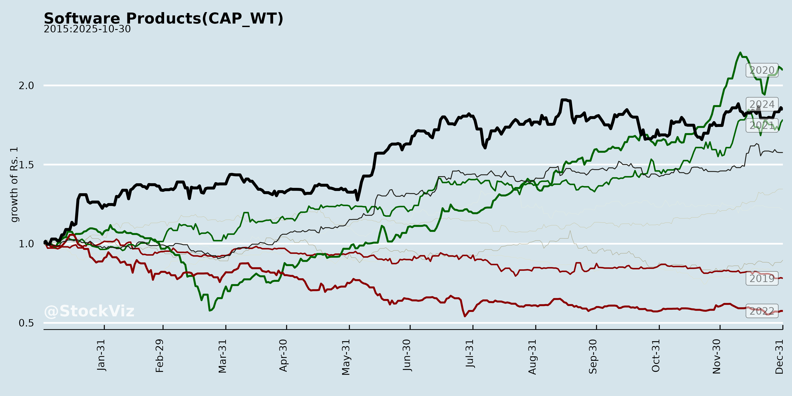
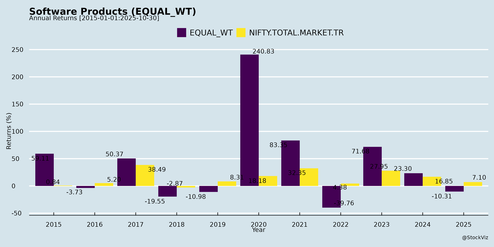
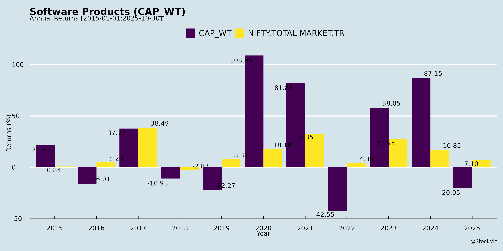
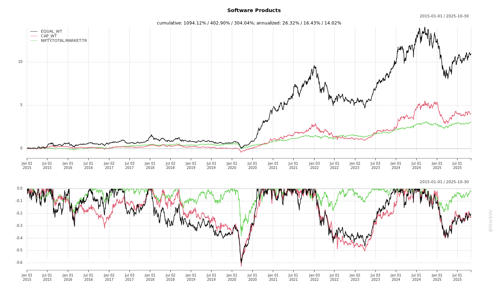
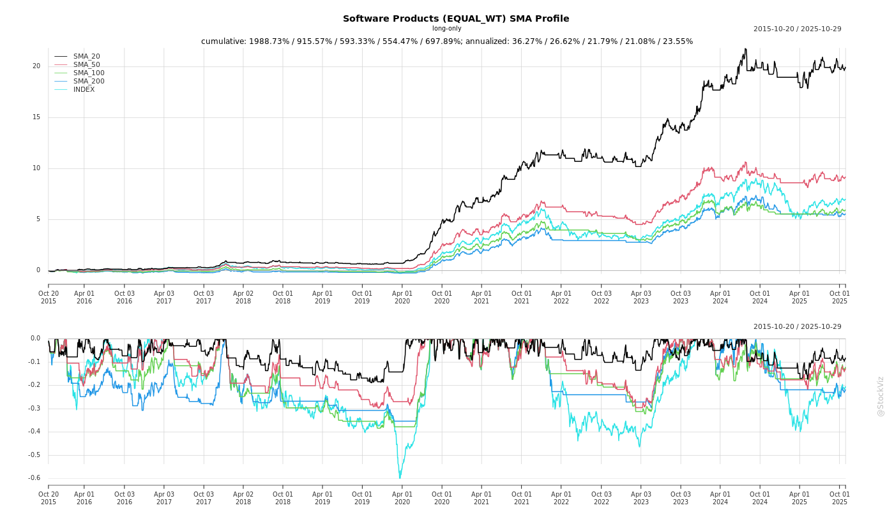
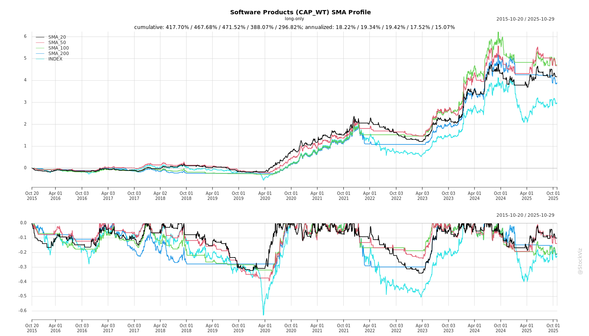
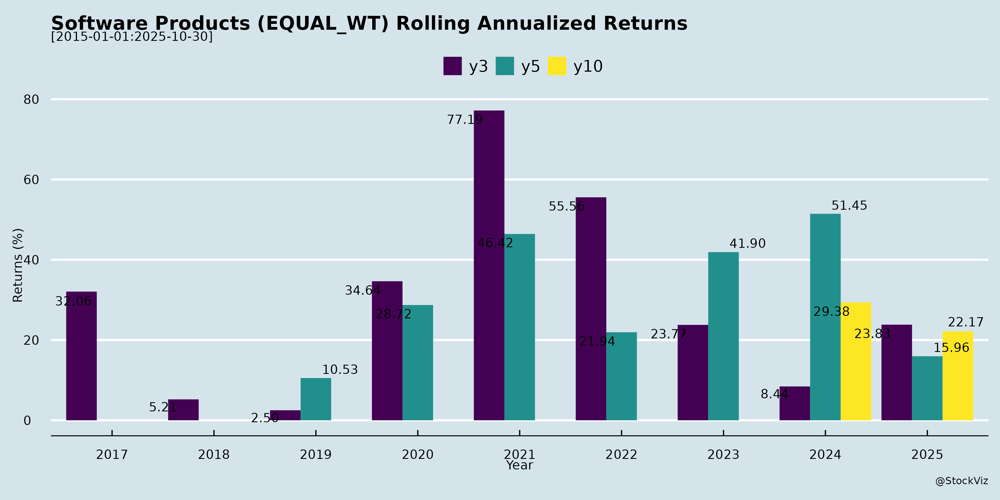

asof: 2025-11-30
The Indian Software Products sector, as reflected in Q2/H1 FY26 earnings transcripts from key players (e.g., MapmyIndia, Nucleus Software, Unicommerce, Subex, Xelpmoc, etc.), shows resilience amid niche innovations in geospatial, telecom analytics, lending SaaS, e-commerce enablement, cybersecurity, and AI/ML frameworks. Companies emphasize product-led growth, AI integration, and government/digital tailwinds, but face execution hurdles. Below is a structured summary of headwinds, tailwinds, growth prospects, and key risks.
| Company | H1 FY26 Highlights | FY26/Future Outlook |
|---|---|---|
| MapmyIndia | Rev +14.7% YoY; EBITDA INR84cr | INR1,000cr FY28; IoT/govt wins |
| Unicommerce | Rev +69.6%; EBITDA +96% | ARR >INR200cr; quick commerce |
| Nucleus | Rev flat; order book INR671cr | New sales structure; AI upgrades |
| Subex | PAT positive; $15M orders | Robust pipeline; AI pivot |
| Xelpmoc | Rev down; portfolio INR703cr | EBITDA breakeven Q4; RELY pilots |
Overall Outlook: Sector poised for 15-30% growth via AI/govt/digital tailwinds, but H2 execution critical amid lumpiness. Focus on SaaS/recurring models and niches (geospatial, e-comm, telecom) offers resilience; monitor Q3 for festive/investment inflection. Positive PAT milestones (MapmyIndia/Subex) signal turnaround.
asof: 2025-12-02
Summary Analysis of Indian Software Products Sector (Based on Q3 FY25 Results of Key Players: OFSS, MapmyIndia, Tanla, Nucleus, Unicommerce, Subex, IRIS, Aion-Tech, Virinchi)
The Indian software products sector (fintech, SaaS, CPaaS, geospatial, telecom analytics, regtech/suptech) shows resilient but uneven performance in Q3 FY25. Revenue growth averaged ~10-20% YoY for most (e.g., MapmyIndia +22%, IRIS +20%), driven by product-led models, but PAT margins compressed (5-15% range) due to costs. Consolidated revenues ~₹50,000 Cr across sampled firms (extrapolated), with EBITDA margins 8-12%. International exposure (50-70%) aids diversification.
Tailwinds (Positive Drivers)
Headwinds (Challenges)
Growth Prospects (High Potential)
Key Risks
Overall Outlook: Moderate Growth (12-15% FY25) with improving EBITDA (turnaround from losses). Focus on SaaS margins, debt reduction critical. Bullish on AI/geospatial/fintech sub-sectors; monitor forex/debt. (Analysis based on 9 firms’ Q3 data; sector capex intact.)
asof: 2025-12-03
Analysis of Indian Software Products Sector
Based on the provided regulatory filings (primarily Regulation 30 disclosures from listed software companies like Oracle Financial Services Software, MapmyIndia, Tanla Platforms, Nucleus Software, Ramco Systems, Quick Heal, Unicommerce, Subex, IRIS Business, AION-Tech/Goldstone, Virinchi, and Xelpmoc), here’s a synthesized analysis of the Indian Software Products sector (encompassing SaaS, fintech software, enterprise solutions, AI/ML platforms, and related tech services). These documents highlight operational, compliance, and strategic updates from mid-2025. The sector shows resilience in digital compliance and expansion but faces governance and execution challenges.
Tailwinds (Positive Momentum)
Headwinds (Challenges)
Growth Prospects
Key Risks
Summary: The sector enjoys tailwinds from digital compliance, AI-driven innovation, and M&A (projected 10-15% growth via exports/startups), but headwinds like subsidiary failures and governance issues cap upside. Net Positive Outlook with disciplined execution; monitor Q2FY26 earnings for portfolio monetization (e.g., Xelpmoc sales). Risks are mitigable via stronger internal controls, but persistent compliance lapses could pressure valuations. Overall sector PE likely 20-30x, favoring AI/fintech sub-sectors.
asof: 2025-11-30
The provided documents cover earnings transcripts and announcements from key players like MapmyIndia (geospatial/IoT), Nucleus Software (lending tech), Unicommerce (e-commerce SaaS), Subex (telecom RAFM), Xelpmoc (AI/data science & startups), and others (e.g., Tanla, Quick Heal, IRIS RegTech). These represent diverse sub-sectors: geospatial, fintech/lending, e-commerce enablement, telecom analytics, cybersecurity, RegTech, and AI/startup incubation. Overall, the sector shows resilience amid volatility, with SaaS/recurring models gaining traction, but facing execution and macro challenges.
Summary: Indian software products exhibit strong structural tailwinds from digital India, AI/SaaS adoption, and govt initiatives, offsetting headwinds like lumpiness and startup woes. Leaders (MapmyIndia, Unicommerce, Subex) show 15-75% growth and profitability inflection, targeting FY26-28 ramps via products/cross-sell. Prospects bright (multi-bn TAMs), but risks center on execution, macros, and concentration. Sector ROIC improving via leverage; monitor H2 for sustained momentum.
asof: 2025-12-03
Summary Analysis: Indian Software Products Sector
Using the provided press releases from key listed Indian software product companies (e.g., OFSS, MapmyIndia, Tanla, Nucleus, Ramco, Unicommerce, Subex, IRIS, AION-Tech, Xelpmoc), the sector demonstrates resilience amid digital transformation themes like AI, fintech, RegTech, geospatial, CPaaS, and logistics. However, performance is mixed, with strong players showing growth while others face profitability pressures. Below is a structured analysis of headwinds, tailwinds, growth prospects, and key risks.
Tailwinds (Positive Drivers)
Headwinds (Challenges)
Growth Prospects
Key Risks
Overall Outlook: Bullish with Cautious Optimism. Tailwinds from AI/digital deals outweigh headwinds, projecting 10-12% sector revenue growth FY26. Leaders (OFSS, Tanla) to drive; laggards (Xelpmoc) need turnaround. Monitor Q3 pilots/deal ramps for sustained momentum.
Copyright © 2023 SAS Data Analytics Pvt. Ltd. All rights reserved.